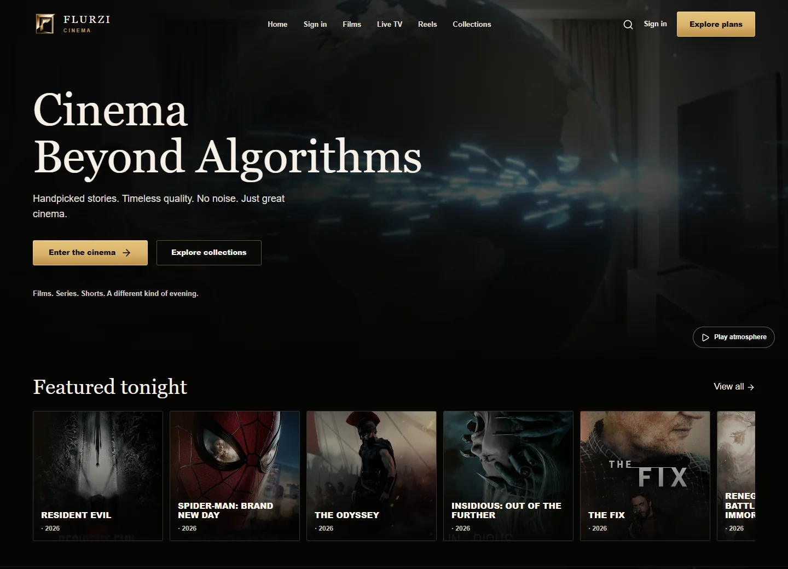

Digital film
Film forms the core of the intended entertainment experience.
A digital film and entertainment platform in development.
In developmentLicensing TBC
Licensing TBC
Licensing TBC
Catalogue, features and launch availability will be confirmed by the platform.

Flurzi Cinema is part of the company's expanding entertainment direction. It is being developed around digital film and entertainment experiences. A public website is available, while the service itself remains in development.
A public website does not indicate an operational viewing service. Catalogue, features, licensing, access and launch availability will be confirmed by the platform.
Planned product direction. These features are not being advertised as available today.
Film forms the core of the intended entertainment experience.
The platform is being developed to bring digital entertainment to its audiences.